[旧翻译文]这17个成功的公司原来共性在这儿！
业余时间成为三节课翻译团的成员，2017-10-31翻译的一篇文章。原文发布于三节课网站。
17个大获成功的MVP案例
创业公司需要尽快发布新品去抢占竞争激烈的市场，最简化可用产品（MVP）可以让这个快点发生。但是你要能够抓住重点，提供有价值的差异化的功能，才能吸引到用户、客户、投资人，从而做大这个市场和产品。
我们收集了15个成功的MVP案例，看看这些创业者在MVP阶段专注些什么，开发了什么样的核心功能。
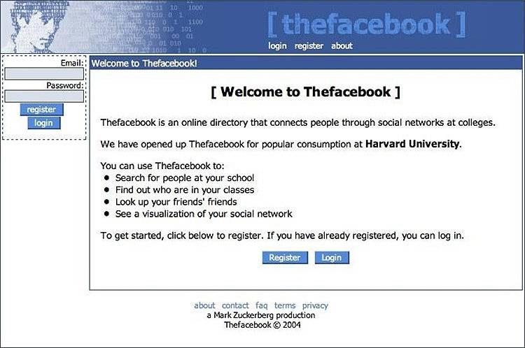
Facebook 脸书
脸书最开始的MVP是让同一个学校和班级的同学发消息到网页上来建立社交关系。这个想法早就在Friends Reunited和其他社交网站上实现了，但是脸书简单而纯粹的功能却像病毒一样迅速在大学生中传播开来。这个最初的MVP奠定了后来所有成功的基础。
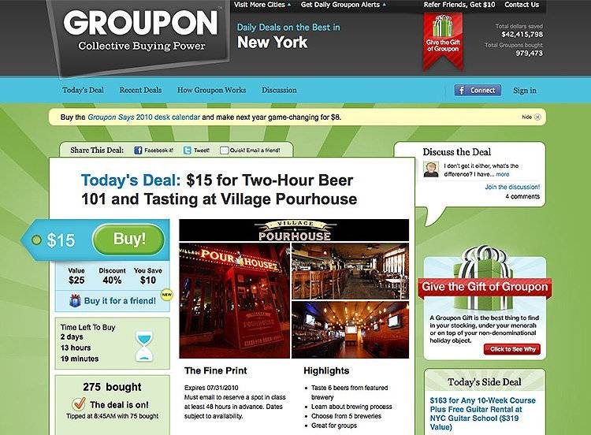
Groupon 高朋
尽管优惠券和折扣券有点儿老套，但是高朋在其中加上了分享和社交元素之后，它们达到了新高度。一开始，高朋只基于WordPress搭了个网站，用普通的PDF形式将优惠券发给早期订阅用户。这个尝试大受欢迎，然后这个公司开发了一套自己的优惠券和后台系统，后来取得了巨大的成功。
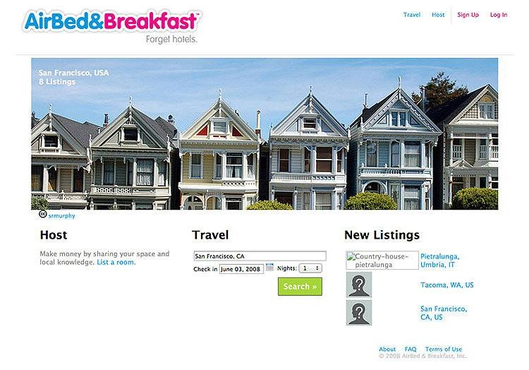
Airbnb 爱彼迎
去除中介和提供短期住宿是爱彼迎的使命宣言。Brian Chesky 和 Joe Gebbia住在在旧金山的一个loft公寓里，房租都快交不上了，于是他们决定尝试创业做点什么来缓解困境。为了测试他们的想法，他们决定给到旧金山参加一个设计大会的人们提供食宿。他俩给自住的loft拍了几张照片，然后设计了一个简单的宣传网页。很快就有3个人付钱了。Airbnb后来就很自然的成长得越来越大，离不开创始人Paul Chesky住在Airbnb房子里的这个点子。
Zynga
现在，游戏和社交媒体经常打包出现。这看起来很稀松平常，但曾经这是两个完全不相关的领域。Zynga的最初的产品是一个几乎人人都能做出来的扑克游戏。但当这个游戏上线到Facebook后变得与众不同，这帮助Zynga团队顺利的拿到了天使投资，后来他们还开发出了爆款游戏Farmville（开心菜园欧美版）。这个案例说明你的MVP甚至有时候跟产品本身无关，而是它出现在什么平台上。
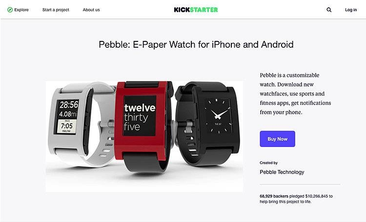
Pebble
智能手表曾经是一个不温不火的市场，直到Pebble证明了把一堆高科技塞进一个硬币大小的空间并不是成功的必要条件。它的初始版本电纸书屏电子手表在Kickstarter上筹集了1000万美金，这么多的支持者证明了这个东西是大家想要的。2015年他们的新产品Pebble Time又众筹到了2000万美金。虽然Pebble去年停止提供服务了，但是它证明了即便是有百万美金的销售额的产品，也不是所有人都需要最新最快的高科技。
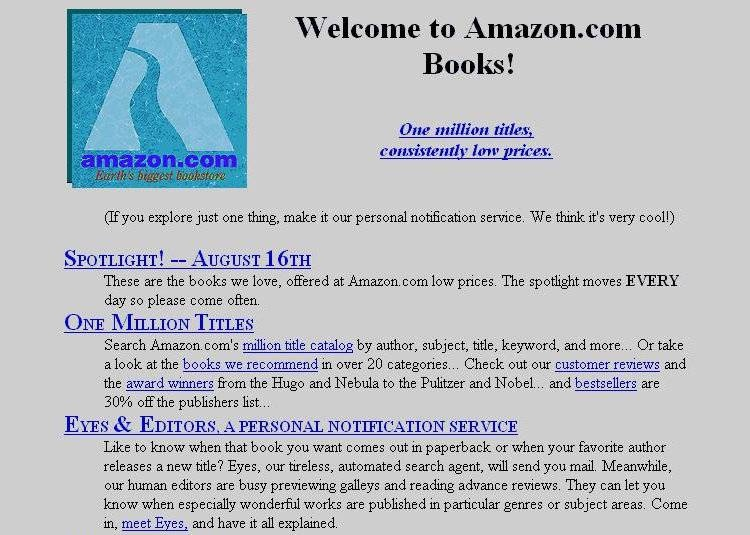
Amazon
Amazon最开始在网上卖书，挑战传统书商Barnes and Nobles。1994年，亚马逊开始把书放到简单的网页上低利润出售，这是亚马逊早期唯一的业务，这个业务帮助这家公司从一个小网站变成了今天的电商巨头。
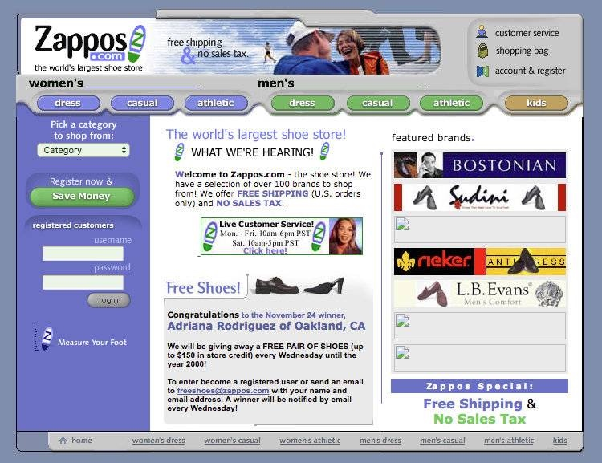
Zappos
如果你想做一个线上电商，但是没法进货怎么办？Zappos的创始人Nick Swinmurn没有进任何货，但开始了他的鞋子零售生意。他把实体鞋店中看起来不错的鞋子拍照上传到网上，如果有用户下单，他就去店里买下来卖给这个用户。如果你一开始没有货源，用这个MVP测试市场的非常聪明的办法。
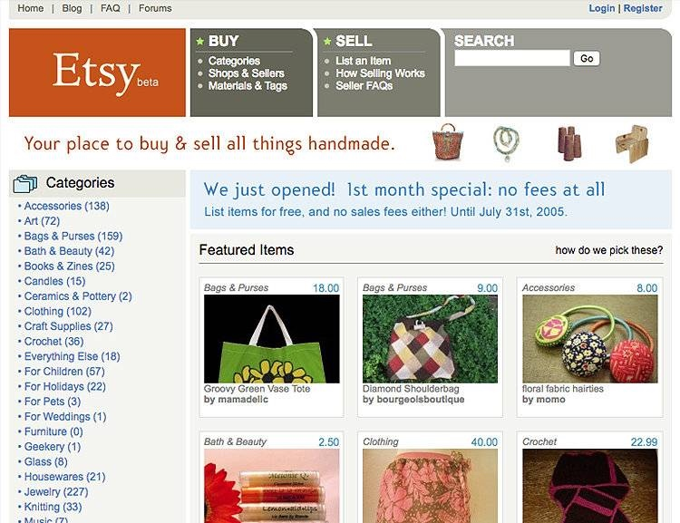
Etsy
这个专注于手工艺品的网站让eBay开店做了验证之后，他们有了第一批种子用户来测试他们的MVP。定制手工艺品的销售从那时开始火爆，Etsy专注于服务定制手工艺品卖家，并借鉴了eBay成功经验以及优化eBay让卖家们失望的点。
Dropbox
Dropbox做的很绝：干脆连产品的MVP也没做。而是，假装他们已经有了然后做了一个演示视频。为了确认文件同步的想法对于用户来说是否有吸引力，他们完全可以搭建一整套服务做客户端等等，但是他们不愿意冒这个险。如果这个想法失败了，Dropbox的两个创始人Arash Ferdowsi 和Drew Houston会浪费非常多的时间和钱。而通过演示视频，一个晚上他们就获得了7万个用户留下了他们的邮箱而且想尽快获得这个产品。接下来发生了什么事情你都知道啦！：）
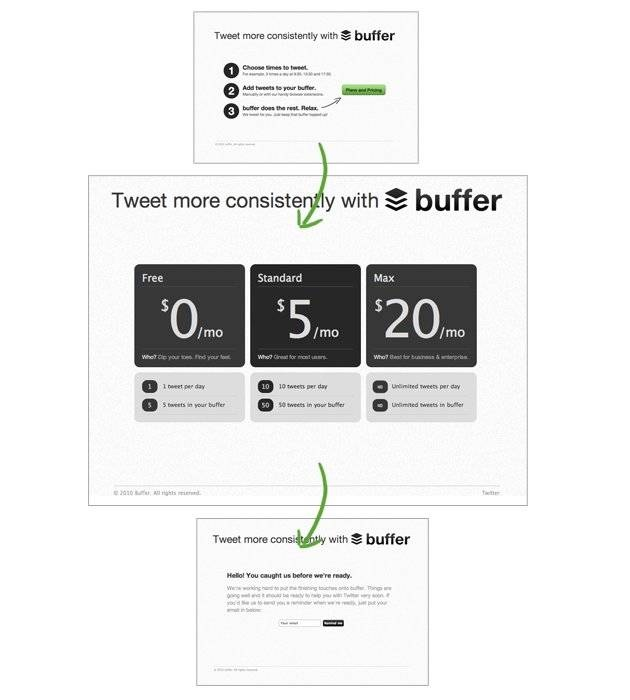
Buffer
有些人可能没听说过Buffer，它是一个社交工具，可以让你在很多社交平台上定时发布消息，比如Twitter, Facebook, LinkedIn, Pinterest, Google+ , Instagram等。Joel Gascoigne是Buffer的CEO，在开始做这个产品之前，他觉得一定不能做一个一个没人愿意用的东西。所以他做了一个类似于Dropbox的MVP。不过他没有用视频，而是做了一个宣传网页，向浏览用户介绍Buffer不同的价格和功能套餐。当用户看完决定购买其中一个套餐时，他们会看到一个弹窗告诉他们Buffer还没做完。。。但是他们可以提前注册并排上队。然后，Buffer通过用户留下的邮箱联系他们，了解他们的需求。这个MVP让Buffer成为了一个市场真正需要的产品。
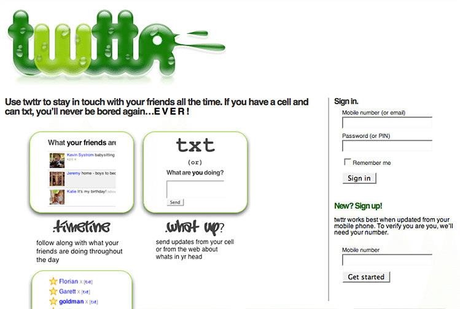
Twitter是一个广受欢迎的社交平台，它的诞生有一点儿与众不同。当苹果发布了iTunes之后，一个播客平台公司Odeo开始感受到竞争的压力，于是他们组织了黑客马拉松来决定接下来要做什么。在这个黑客马拉松比赛中他们冒出了一个做一个发短消息平台的想法。它最开始的名字是：twttr，而且是内部使用的产品。但是后来内部员工花很多钱来发短信po到这个平台上，Odeo的创始人意识到这个东西可能是一个不错的转型方向。
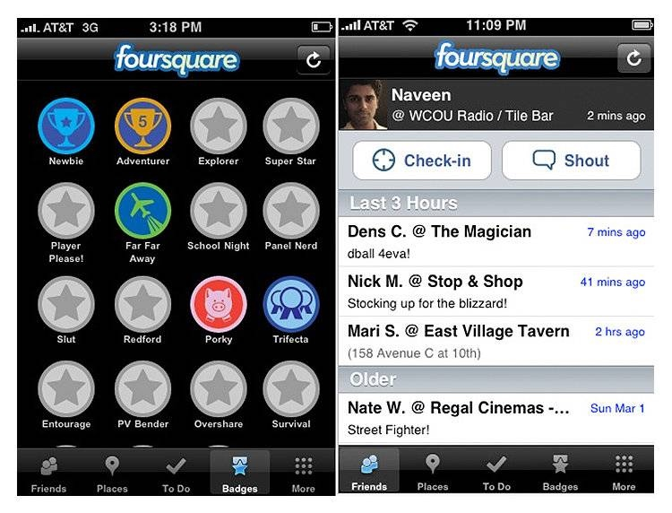
Foursquare
基于地理位置的社交平台-Foursquare的MVP堪称单一功能的MVP之经典。Dennis Crowley和 Naveen Selvadurai并不是做生意的新手。在创建Foursquare之前，他们已经开发了一个类似的平台-Dodgeball，最后卖给了Google。所以当开始一个新项目时，他们已经有了自己的套路：Foursquare一开始是一个功能很少的MVP-可以让你在不同的地点签到，然后给你一个徽章来作为游戏化过程的一部分。当这个MVP受到大家的认可和成功之后，他们才开始加更多的功能，把它变成一个更加专业的城市指南。
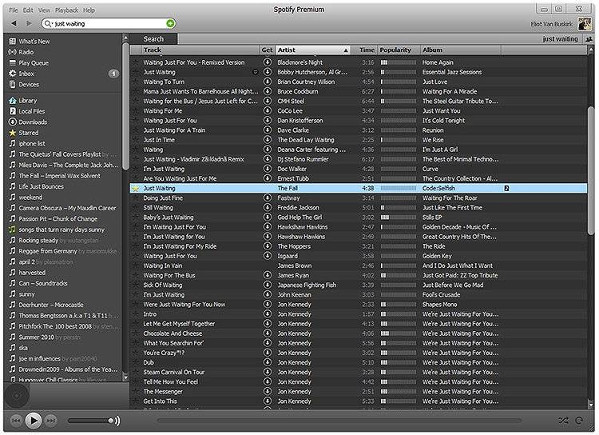
Spotify
Spotify也是一个非常好的例子来证明：在MVP中只需要一个核心功能，而不需要太多花哨的功能就能成功。他们想建立一个绝佳的音乐播放服务。所以在MVP的版本，仅有一个核心功能：在线播放音乐。Spotify的团队使用一个桌面客户端来测试市场的反馈。当MVP产品和免费的商业模式被确认是大家想要的东西之后，他们就开始花时间签约更多的音乐人，同时开发移动客户端，并且开拓美国这个海外市场。
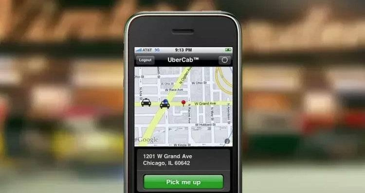
UBER
如果你不了解UBER在2010年的历史，你可能会惊讶，因为UBER一开始根本就不是大众熟悉的样子。UBER的MVP只做了一件简单的事情：把旧金山所有不担心信用卡被一个不知名APP盗刷的车主连接起来。但这样就能够满足他们的主要目标了：提供尽可能便宜的打车服务。现在的Uber已经是我们熟知的将一个生意成功规模化了公司，这个公司是建立在一个成功的MVP测试之上的。
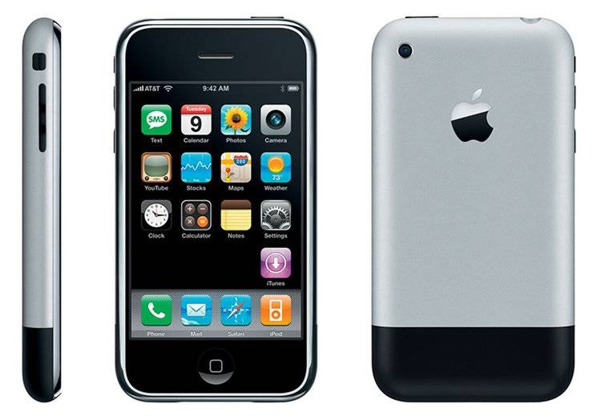
iPhone
很惊讶在这个清单里看到iPhone么？其实，完全没必要惊讶。毕竟iPhone在发布第一代的时候，很多基本功能都没有。比如复制粘贴。而且我说的还不是复制一张图片，连文字你都没办法复制。还有，搜索…在第一代版本里连搜索栏都没有...是的，现在你可能早就习惯的搜索框，在那时是没有的。还有更夸张的，当你在手机上发邮件写邮件地址的时候，你大概会以为会有自动提示文本补全吧，也没有：）
你想发一张路上看到的可爱小松鼠给你的小伙伴。恩......好像听起来还挺有爱的。但是iPhone并不能发彩信，哈哈哈哈。而且iPhone 2G也不行，彩信还是发不了。既然发不了彩信，那试试音乐把。我很讨厌耳机线，所以我应该拿出我的炫酷蓝牙耳机。什么？没有蓝牙？不是每个智能手机都有蓝牙么。是，但是那时的iPhone没有。
我不是讨厌苹果手机，我爱死它了。我这么说只是为了让你知道你在MVP阶段并不需要把所有东西都搞完整。把核心的东西搞定，测试用户是不是真的需要它。如果连苹果这样的巨头都不愿意赌一把，你也完全没必要。
如果你想看从开发者角度看苹果手机的MVP，可以看这篇文章：An efficient mobile MVP from an iOS developer perspective
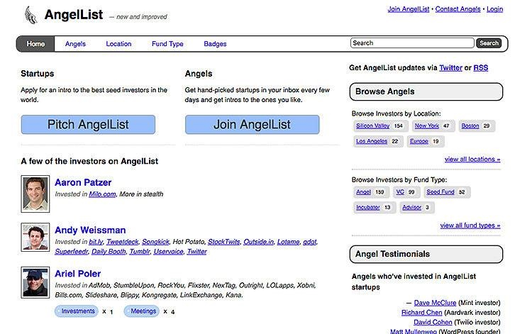
AngelList
AngelList是一个帮助创业公司融资以及和连接投资人的平台，现在也有招聘功能。当Babak Nivi和Naval Ravikant这两个创始人在2010年1月创建这个网站的时候，他们通过给投资人发介绍邮件来测试他们的想法是否有人感兴趣。在那之后，他们发现将他们的想法是有市场的，于是开始完善并扩张产品。
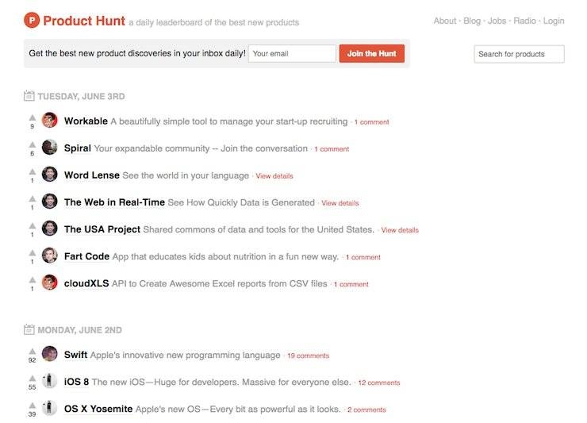
Product Hunt
Ryan Hoover是Product Hunt的创始人，希望建立一个让大家分享和讨论他们产品的社区。但是做一个功能详尽的网站太麻烦了可能需要开发好几个星期，Ryan还不确定是不是大家想要这个东西，他担心自己是唯一一个需要这样的社区的人。为了测试这个想法，他决定自己做一个MVP。Ryan用了一个叫Linkydink的玩意儿，这是一个在群组内分享链接的工具。他用这个工具创建了一个群组，然后在社交媒体上发了一下他的想法吸引人们加入群组。
在最开始的2个星期，Ryan的20分钟做成的MVP吸引了170个人来分享他们的想法和发现的新产品。
总结
让产品成功的方式有很多种，MVP是非常适合创业公司的快速解决方案，因为他们既没有足够的钱也没有足够的人。小公司经常能够做出很多创新，是因为他们没有大公司的条条框框的限制。所以你也不用担心测试你的想法，因为即便是你认为特别疯狂的点子，最后可能也被市场证明一点反应也没有。如果你还能找到好的MVP例子加进来，欢迎在评论区留言。
[旧文]被遗忘的“互联网活化石”尼葛洛庞帝和他想要连接的第三世界
原文发布于2014-06-27，在品玩网站。当时我还在新媒体就职。由于尼葛洛庞帝的书《数字化生存》我在上大学的时候觉得挺好看的，所以这个活动主动要求去了。然后就写了第一篇活动新闻稿子。见笑了。
被遗忘的“互联网活化石”尼葛洛庞帝和他想要连接的第三世界
当这位年过70的老爷爷尼古拉斯·尼葛洛庞帝（Nicholas Negroponte）出现在会场的时候，不足六成的上座率显得现场非常冷清。
尼葛洛庞帝是90年代互联网畅销书《数字化生存》的作者，是前沿科技杂志《连线》的早期投资人和专栏作家，同时也是麻省理工媒体实验室的创始人。而在中国，更为人所知的事是——他是张朝阳的老师和天使投资人。就在最近，尼葛洛庞帝来到北京参加了一场名为“超越数字化”的峰会，这是他为数不多的回到公众视野。
“他们像弹钢琴一样，使用着电脑的键盘。”尼葛洛庞帝说完这句话露出了一个非常开心的笑容，这几乎是当天整场活动里他唯一一个轻松的笑容，尽管台下的观众对此显得非常木然，“根本不需要人教他们怎么使用，使用电脑看起来就像是与生俱来的技能。”他说。“1982年发生的那件事对我产生了很大的影响。”
这件事发生在他创办麻省理工媒体实验室的3年前，当时还在世的乔布斯是他非常好的朋友，送给了他大约300台Mac。他把电脑拿到塞内加尔，让所有的学生通过电脑感受当时的科技。塞加内尔这个国家在那时是一个连供电都困难的地方，孩子们也从来没体验过任何现代世界的生活，不会法语也不会英语。在没有任何人教的情况下，他们最后却如鱼得水般地学会使用Mac。
如果你读过《乔布斯传》的话，应该还会记得最初苹果生产的电脑主打的是教育市场——乔布斯曾经说过他觉得互联网科技应该对教育的影响更大才对。教育最应该被革新，但整个实现的过程却进展缓慢。
1982年过后的30多年来，尽管互联网世界天翻地覆地变化着，但我所看到的尼葛洛庞帝却一直都没有忘记那令他感到惊奇的一刻，也是那一刻支撑着他直到如今还在不遗余力地向别人介绍他的“每个儿童一台笔记本电脑”项目——这是一个致力于用100美元的廉价电脑将第三世界国家的孩子们连接到互联网的事业。但尴尬的是，沉寂的现场似乎没有人关心他的公益教育事业。事实上，他曾经在10年前在中国寻找100美元廉价电脑的供应商，结果在中国游说的一年半，被他称之为浪费时间（waste of time）。
在用100美元廉价电脑帮助非洲一些国家改变人们对于学习和教学的方式的项目结束后，尼葛洛庞帝又拿着iPad到埃塞俄比亚做了一个实验。他想知道在一个没有电力、没有电话、没有学校、一无所有的极端的条件下，这些没有学过读书写字的孩子们会怎样接受新的科技。“我们在埃塞比亚找到了两个村庄，给村庄里的孩子们送去了一些iPad。我们在当地建立了太阳能发电站，并给村庄里的一些成年人展示如何来使用太阳能给iPad充电。之后，我们把这些iPad包装好留下，就离开了。我记得当时，每个平板电脑上，有上千个针对孩子的应用，比如互动的活动、带字幕的电影和故事等。”一周后，这个村落里的每一个孩子每天平均使用50个应用。两周后，这些本来不会英语的孩子学会了唱ABCD歌；四个月后，这些孩子甚至会hack了。”
这件事让尼葛洛庞帝非常兴奋，他觉得iPad在改变这些没有学校的贫困地区的教育上有着非同一般的作用：让这些从来没有见到过文明社会的孩子，在现代科技的帮助下与世界连接在一起，看起来是一件了不起的事情。
但不是所有人都觉得尼葛洛庞帝做的是正确的事。尼葛洛庞帝所坚信的“互联网应该成为人们的基本权利”的观点，以及一系列对于技术改变生活的想象等被他们称为“技术乌托邦”。就像在现场，不断有人提问关于政府监管、国家主义等“不合时宜”的问题，而在某些现实经历上的失败，使得这位曾经非常著名的互联网预言家显得有些沮丧。“在某些方面，我确实估计错了。”尼葛洛庞帝说。
比如，尼葛洛庞帝的廉价笔记本电脑项目被人批评过不如商业化运作；他的想要连接最后10亿人的想法也有很多大公司也在做，如Google和Facebook。不过这些，现在看起来不那么重要了。活动上，当他被问及智能手机、BAT、可穿戴设备、互联网金融、人工智能等一系列在中国互联网世界讨论正热闹的问题时，他显得有些茫然。就像他的连接最后10亿人的项目离中国无比遥远一样，他的身影在台上也非常孤独。
“他老了，过时了。聊的都是些泛泛的话题。”不少媒体人这样描述尼葛洛庞帝。
这位迄今仍然沉浸在“技术乌托邦”世界里的互联网活化石是科技前沿杂志《连线》的早期投资人，90年代他曾在这本杂志上开设专栏，用自己的那套理论反复阐释新科技在教育领域的重要性。然而如今，那些空洞、苍老，且不再为人所关心的演讲词，却显得有些乏力。当作为商业公司的Google在用放飞气球的方式给最后10亿人送去互联网连接的时候，与商业绝缘的尼葛洛庞帝送出再多的iPad，可以改变的东西还是显得太少太慢了……
MAC电脑工具推荐
在写下这个初始版本的时候，电脑版本：high sierra 10.13.1 (17B1003)，发现下面部分软件已经不兼容mac后续的版本了。
每次用到好工具的时候感觉这个世界又变得更美好了一点。欢迎给我推荐工具：）
MAC装机
- bartender - 让你的状态栏清爽
- alfred 效率工具
- contexts - 让你在多窗口的时候 在2-3个快捷键内快速切换到任何窗口 还有一个类似的叫Manico但是不如这个好用
- hyperdock - 在底部状态栏预览多窗口，这个功能当时在windows下的时候我觉得还挺实用的，尤其在一个设计工具开很多个参考窗口的时候
- paste - 如果你需要经常复制粘贴很多东西 想要记住复制的记录
- ezssl - 科学上网，我的推荐码：115057 曾用名 熊 猫 翻 滚，有点贵，但是很稳定很快
- bettersnaptool - 在稍微早期一些的版本里 MAC是没有这个功能的 后来...MAC自带了就不需要了
- 预览多图片软件：在mac下简直是不能忍，2014年用到现在的一个软件 arcsoft photo+ 已经很久不更新了，现在腾讯出了一个先推荐腾讯的把：看图
- entropy - mac下压缩解压文件工具，压缩的rar给windows不会乱码，可惜不更新了啊。。又
工作与生活
- sketch
- invision- 设计图在线快速prototype以及方案共享及会议, 它家出的craft manager的sketch插件也一定要用
- abstract - 用git的思路管理sketch的设计版本
- sip - 吸色工具
- MWeb - markdown
- omni系列
- evernote - 如果需要界面更简洁的皮肤alternote可以直接同步印象的笔记
- leaf - rss阅读
- 其他常用的都差不多就不啰嗦啦
- notion - 这个工具自己还没有亲测，但是看产品的样子和别人极力推荐给我的样子，感觉还不错
之前偶然发现个小众网站会介绍一些有意思的人和职业平常用什么工具的网站：利器 http://liqi.io/
版本记录
180328 ruolan首次创建
Copyright © 2015 Powered by MWeb, Theme used GitHub CSS.